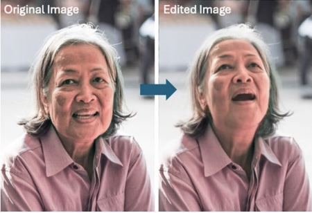
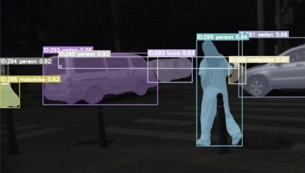
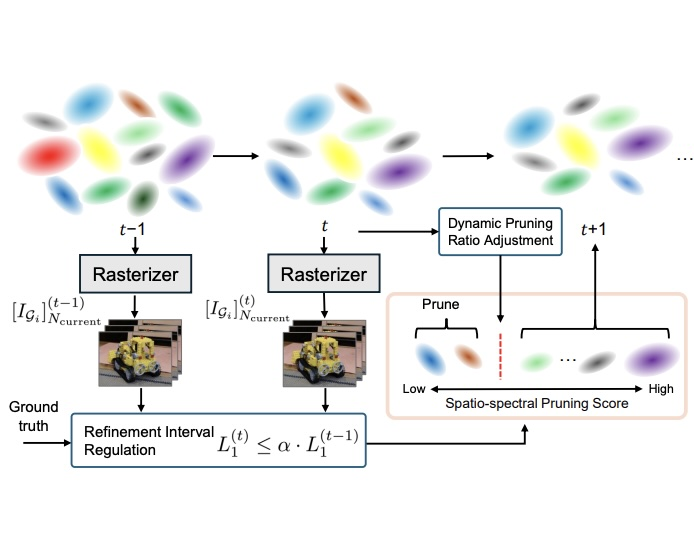
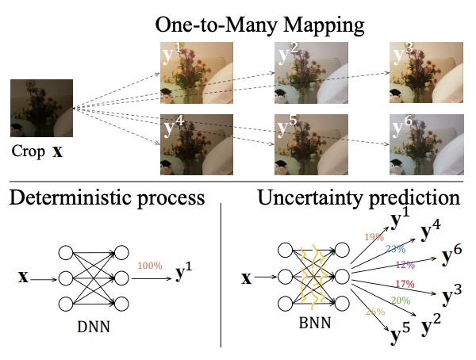
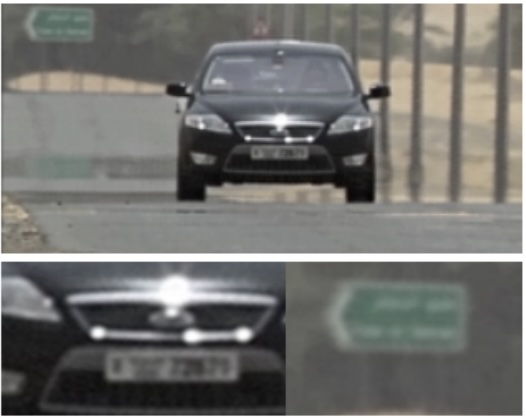
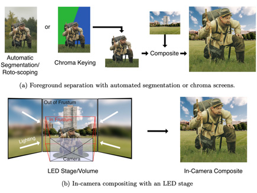
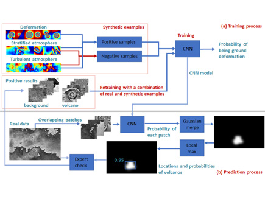

About
I am an Associate Professor in the School of Computer Science at the University of Bristol (UoB), a member of the management team of the Bristol Vision Institute, and a member of the Visual Information Laboratory, led by Prof. Alin Achim. I have been involved in many projects across multiple disciplines, including telecommunications, biology, optometry, clinical sciences, biochemistry, mechanical engineering, psychology, and geoscience. I lead the work package AI Workflows for Challenging Acquisition Environments as part of MyWorld, led by Prof. David Bull, which strengthens the world-leading position of creative technologies in the southwest region. Additionally, I am a key scientist at the Centre for the Observation and Modelling of Earthquakes, Volcanoes, and Tectonics (COMET).
Regarding teaching duties, I am the Programme Director of the MSc Immersive Technologies (Virtual and Augmented Reality) and teach Advanced Visual AI (Y4) .
Opportunities
- PhD Scholarship funded by UoB/EPSRC: Project 'Intelligent Video Restoration and Enhancement via a Large Prior Database'
- PhD Scholarship funded by UoB: University of Bristol Postgraduate Research Scholarships. Please send me your CV and transcripts.
Recent Publications
- ICME2026: TempRetinex: Retinex-based Unsupervised Enhancement for Low-light Video Under Diverse Lighting Conditions
- CVPR2026:
News & Activities
- 2025-2027: EURASIP TAC (Second Term) Biomedical Image & Signal Analytics
- Jan 2026: New project! Real-time Atmospheric Turbulence Mitigation
- 11 Oct 2025: Public talk: Filming The Extremes
- 9 Aug 2025: Invited talk Video Enhancement for Challenging Environments
- 29 April 2025: Invited talk: EGU
- 12 Mar 2024: Invited talk: AI for Visual Data at CenSoF
- 12 Feb 2024: New project! MyUnderwaterWorld
- 31 Oct 2023: New dataset! BVI-Lowlight Fully registered video dataset
Projects
Production Workflow for Challenging Environments
- Intelligent Video Restoration and Enhancement
- Low-Light Enhancement and Denoising
- Underwater Enhancement & 3D Representation
- Atmospheric Turbulence Removal [Model-based]
- Atmospheric Turbulence Removal [AI-based]
Medical and Biological Image Computing
Computational Imaging in Remote Sensing
- Automated Alert System for Volcanic Unrest
- Dynamic Ground Motion Map of the UK
- Ground Movement Monitoring along the Rail Corridor
- River Planform Extraction in SAR
- Image Fusion
Computer Vision for Robotics
Publications
For all my papers, see both google scholar and university siteSelected papers

Advances in Artificial Intelligence: a Review for the Creative Industries-

-

Prune Wisely, Reconstruct Sharply: Compact 3D Gaussian Splatting via Adaptive Pruning and Difference-of-Gaussian Primitives -

-

-
 Unsupervised anomaly detection for volcanic deformation in InSAR imagery
Unsupervised anomaly detection for volcanic deformation in InSAR imagery -
Feature Denoising For Low-Light Instance Segmentation Using Weighted Non-Local Blocks
-

Reviewing Intelligent Cinematography: AI Research for Camera-based Video Production-
-
-

Download
Datasets
- BVI-RLV: Fully Registered Low-Light Videos
- BVI-LOWLIGHT: Dataset for Low-Light Image Denoising [Paper]
- BVI-Turb: Atmospheric Turbulence Dataset
- BVI-Coral: Underwater scenes for 3D reconstruction [Paper]
- OCT2Confocal: in-vivo OCT and ex-vivo confocal retinal images [Paper]
- ICIP 2022 Challenge: Parasitic Egg Detection and Classification in Microscopic Images [Paper]
- Chula-parasitic-eggs: Parasitic Egg Detection and Classification in Low-cost Microscopic Images [Paper]
- LICS Dataset for Volcanic Deformation Classification [Paper]